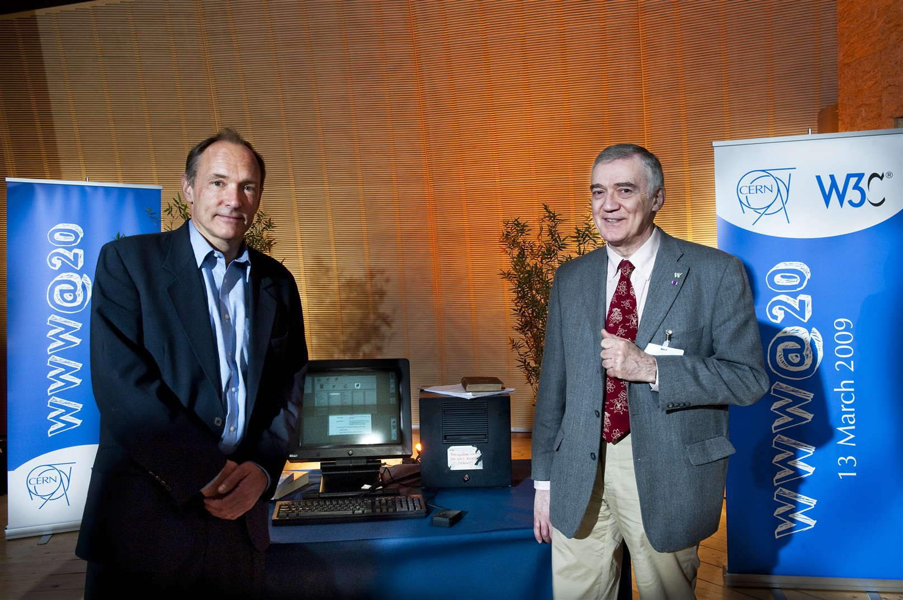

Estos cambios han tenido un profundo impacto en la vida moderna.
-Ingeniería en Administración de Sistemas
Formar Ingenieros en Administración de Sistemas competentes en el desarrollo de aplicaciones de
software,
que aporten y administren soluciones integrales e innovadoras, para la toma de decisiones, promoviendo
la
investigación y el desarrollo tecnológico; con una formación integral orientada a satisfacer las
necesidades de
la sociedad en el área de las tecnologías de la información.
https://www.uanl.mx/oferta/ingeniero-administrador-de-sistemas/